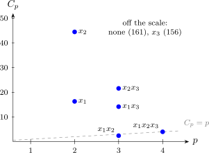

7.3 All possible regressions
With \(K\) candidate regressors there are \(2^K\) subset models, counting the model with the intercept alone. When \(K\) is moderate (up to about \(20\) with modern computing) all of them can be fitted and compared on the criteria above. The usual presentation lists, for each size \(p\), the few best models of that size.
Example 7.3.1. Fit all eight subset models to the farm data of Example 7.1.3 and choose a model.
Solution. Here \(n = 12\), \(SS_T = 574.67\), and the full model gives \(\hat \sigma ^2 = MS_{\mathrm {Res}} = 26.891/8 = 3.361\).
| Regressors | \(p\) | \(SS_{\mathrm {Res}}\) | \(R^2_p\) | \(R^2_{\mathrm {adj}}\) | \(MS_{\mathrm {Res}}\) |
| none | 1 | 574.67 | 0 | 0 | 52.24 |
| \(x_1\) | 2 | 81.73 | 0.858 | 0.844 | 8.17 |
| \(x_2\) | 2 | 176.34 | 0.693 | 0.663 | 17.63 |
| \(x_3\) | 2 | 552.56 | 0.038 | \(-0.058\) | 55.26 |
| \(x_1, x_2\) | 3 | 28.33 | 0.951 | 0.940 | 3.15 |
| \(x_1, x_3\) | 3 | 67.85 | 0.882 | 0.856 | 7.54 |
| \(x_2, x_3\) | 3 | 92.71 | 0.839 | 0.803 | 10.30 |
| \(x_1, x_2, x_3\) | 4 | 26.89 | 0.953 | 0.936 | 3.36 |
| Regressors | \(C_p\) | AIC | BIC | PRESS |
| none | 160.96 | 48.43 | 48.91 | 683.90 |
| \(x_1\) | 16.31 | 27.02 | 27.99 | 116.85 |
| \(x_2\) | 44.46 | 36.25 | 37.22 | 240.42 |
| \(x_3\) | 156.39 | 49.96 | 50.93 | 734.91 |
| \(x_1, x_2\) | 2.43 | 16.31 | 17.76 | 46.28 |
| \(x_1, x_3\) | 14.18 | 26.79 | 28.24 | 128.94 |
| \(x_2, x_3\) | 21.58 | 30.53 | 31.99 | 162.92 |
| \(x_1, x_2, x_3\) | 4.00 | 17.68 | 19.62 | 68.74 |
Two of the entries in full, for the model in \(x_1, x_2\) (\(p = 3\)): \begin {align*} C_3 &= \frac {28.332}{3.361} - 12 + 6 = 8.43 - 6 = 2.43 , \\ \mathrm {AIC}_3 &= 12\ln \frac {28.332}{12} + 6 = 12 \times 0.8591 + 6 = 16.31 . \end {align*}
Every criterion chooses the model in \(x_1\) and \(x_2\). It has the largest \(R^2_{\mathrm {adj}}\) and the smallest \(MS_{\mathrm {Res}}\), \(C_p\), AIC, BIC and PRESS. Its \(C_p = 2.43\) is below \(p = 3\), so there is no sign of bias, while every other model with fewer than four parameters has \(C_p\) far above the line (Figure 13). Adding \(x_3\) raises \(R^2\) only from \(0.951\) to \(0.953\), and makes every other criterion worse; PRESS in particular rises by half, from \(46\) to \(69\). The chosen model is \[ \hat y = 5.84 + 1.98x_1 + 1.30x_2 . \] Each extra bag of fertiliser per hectare goes with about two more bags of maize, at a fixed labour input; distance to market adds nothing once fertiliser and labour are known.

Questions on this section
Stuck on something here? Ask below and it stays attached to this topic.